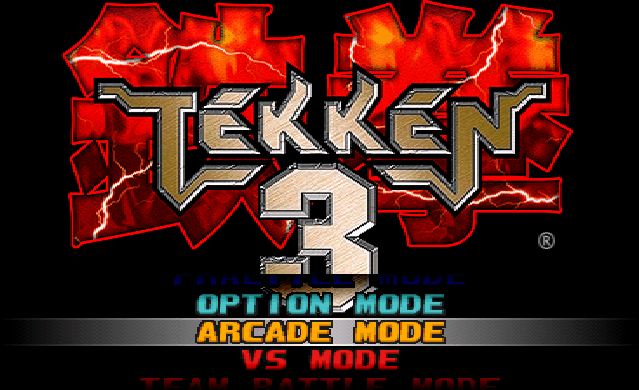
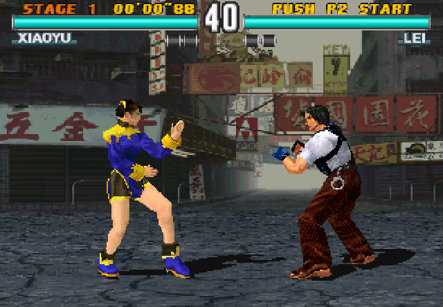

名稱：鐵拳3 (Tekken 3，中文版) 簡介：Bandai Namco 1997年出品的格鬥遊戲，2001年由傑生資訊中文化並代理發行 [待補]。

保護：光碟，可直接在光碟上執行（使用鍵盤者，請執行KEY.EXE進入遊戲）。 備註：繁中版為1.02版 備註：本遊戲光碟採多Session保護，建議使用ccd格式燒錄，若以cue/bin格式直接燒錄，會 導致燒錄失敗。 限制：由於系統相容性問題，本遊戲只能在Win9x系統上執行，且CPU必須支援MMX（Pentium II以上），DirectX必須8.0以上。以下為各Win98系統環境的執行狀況（將光碟檔拷入 虛擬機內掛載，使用實機光碟機對應方式無效）： 1.VMware：遊戲正常，視窗選單常駐在上方，畫面大小較PCem/86Box+Win98略小一些些。 2.PCemV17：進入遊戲正常，按Esc暫停後當機。 3.86Box 3.11：進入遊戲後畫面閃爍，之後顯示異常，按Esc暫停後當機。 4.86Box 6.0：啟動遊戲後讀取不到光碟，按跳出光碟後才正常進入，按Esc暫停後當機。